Зашёл в приложение как ты с твоим фото. Прошёл онбординг и часть сфер. Сделал это дважды — сначала на старой версии (что было ещё на сервере), потом после того как ты сказал «всё поменялось» — заново на новой версии.
Этот отчёт — снимок состояния продукта на 9 мая 21:00 МСК.
Я успел пройти все 10 сфер и собрать одну сцену в каждой (плюс 3 параллельных в Свободе — старая логика). Анализ этого захода уже разобран в [Анализ от 8 мая](./nextmeee-walkthrough-08-may-analysis.html) — паттерн тот же.
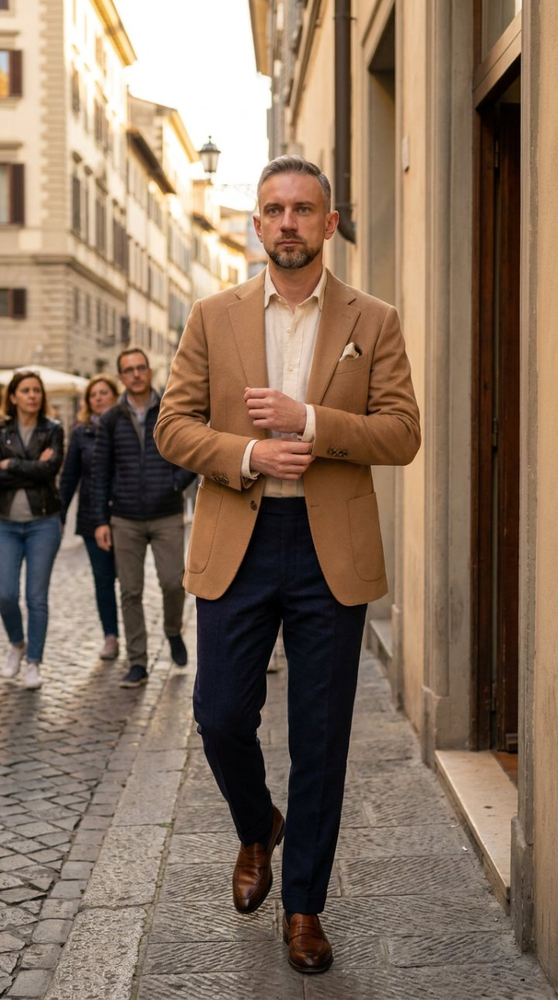
Заголовок: «Наследие в движении» (изначально «Тихая сила в движении между странами»).
Что не так: мужчина 45+, седина, борода — не Олег. Identity-mismatch. Это та же проблема что 8 мая.
1. Я и состояние · «Утренний ритм созидателя»
2. Ресурсы · «Спонтанный вылет: Тоскана» 🚨 (буквально «Тоскана» в названии)
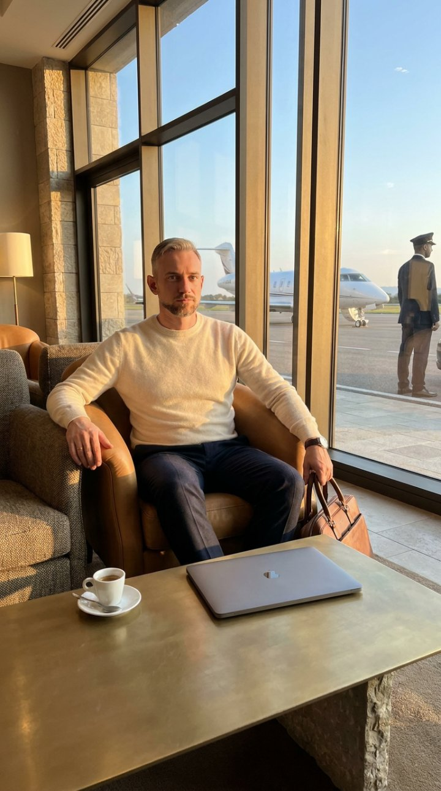
3. Реализация и влияние · «Момент оживления»
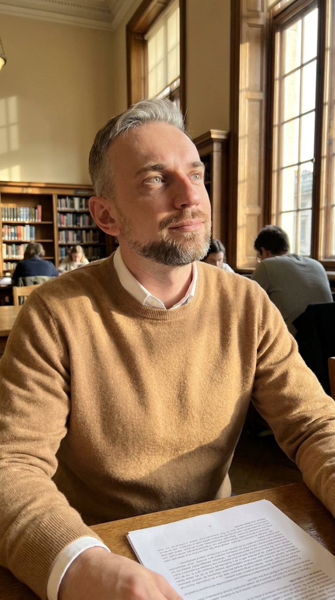
4. Любовь и партнёрство · «Молчаливый резонанс»
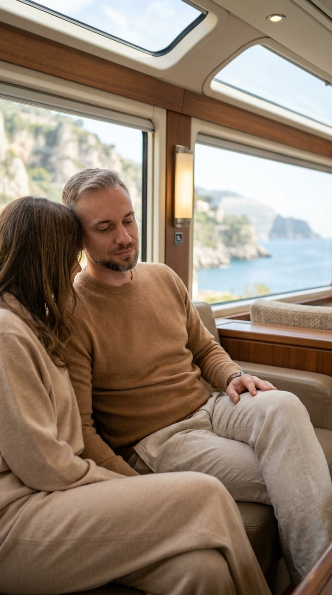
5. Дом, семья и близкие · «Тихая гавань» (промт говорил «без человека в кадре», но в кадре мужчина — рассинхрон промта и картинки)
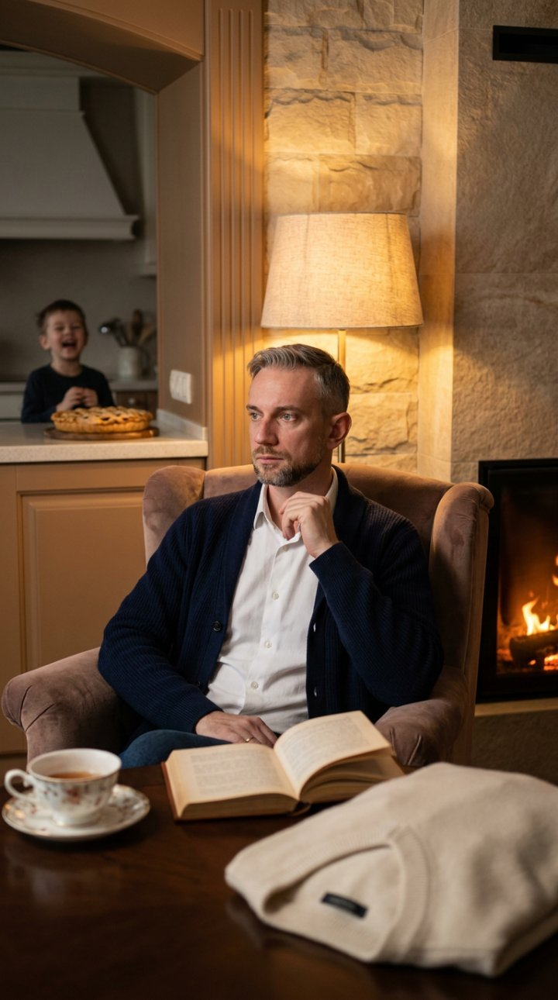
6. Дети и наследие · «Наследие в тишине»
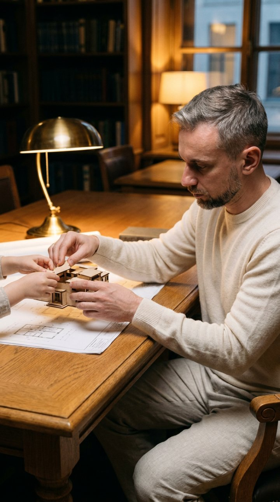
7. Творчество и новые начинания · «Архитектура замысла»
8. Развитие и мудрость · «Утреннее чтение в тосканской вилле» 🚨 (опять Тоскана)
9. Свобода и масштаб жизни — три параллельные сцены:
«Тихая стратегия на рассвете» (мужчина с дневником, виноградники Тосканы — Tuscany trap):
«Архитектор пространства»:
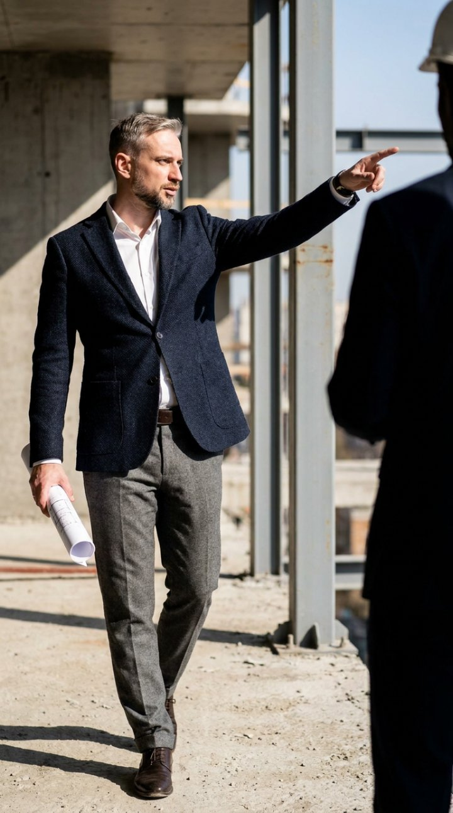
«Горизонт возможностей»:
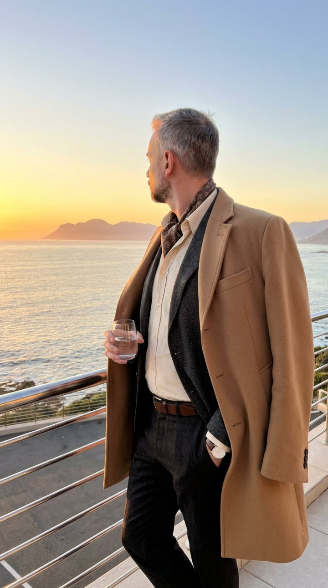
10. Окружение · «Интеллектуальная тишина» (частный клуб — luxury-cliché)
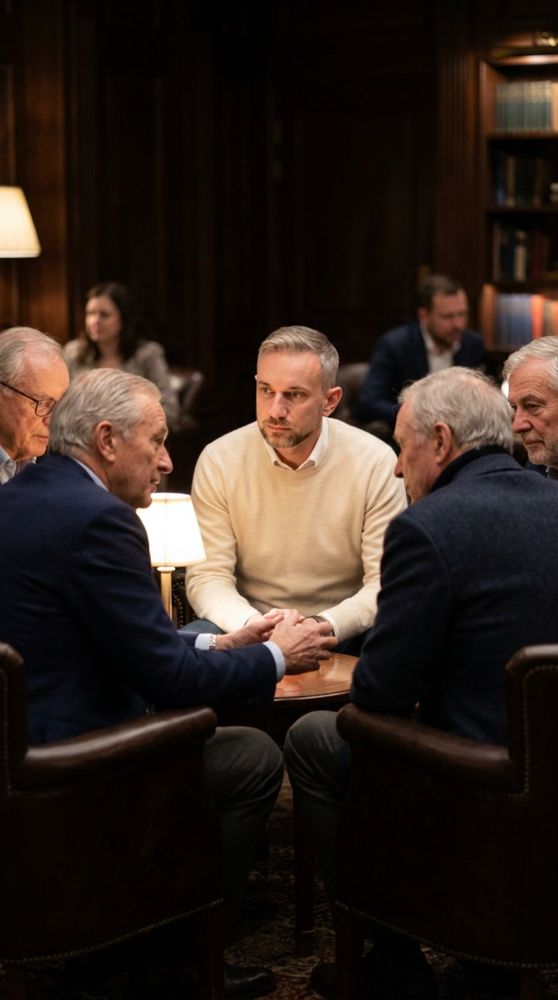
/onboarding/.../collage-generation всё ещё есть.Зарегистрировался как новый юзер 5900 с тем же фото. Прошёл онбординг + 2 сферы (9 «Свобода» и 2 «Ресурсы»). Дальше остановился — большой объём, сделаю в следующий заход.
✅ Появилась кнопка «← Назад» на каждом шаге онбординга — раньше нельзя было вернуться.
✅ На опросе сферы 9 убрали лишнее — Q4 стал коротким и на «ты»: «Какой один простой момент или действие в таком пространстве сразу даёт тебе ощущение, что весь мир открыт перед тобой?» (раньше был длинный бинарный).
✅ Новая опция в impact-вопросе — «Мировой уровень» (раньше был только «На широком уровне и с большим влиянием»).
✅ Q5 «Как тебе хочется видеть эту сцену?» — теперь есть везде. «Готово» вынесено из опций в отдельную кнопку (раньше было опцией наравне с другими).
✅ Q4-ответ начал попадать в pitch и кадр. В сфере 2 я написал «закрыть ноутбук и поехать без согласований» — в pitch’е появилась фраза «закрывает ноутбук и направляется к частному терминалу», и в кадре виден закрытый ноутбук на столе. Это самое важное улучшение — раньше Q4 игнорировался.
✅ 1 фото на сферу вместо 3 параллельных — экономия кредитов.
❌ Identity-mismatch жив. На картинке всё ещё мужчина 50+, седой, не Олег.
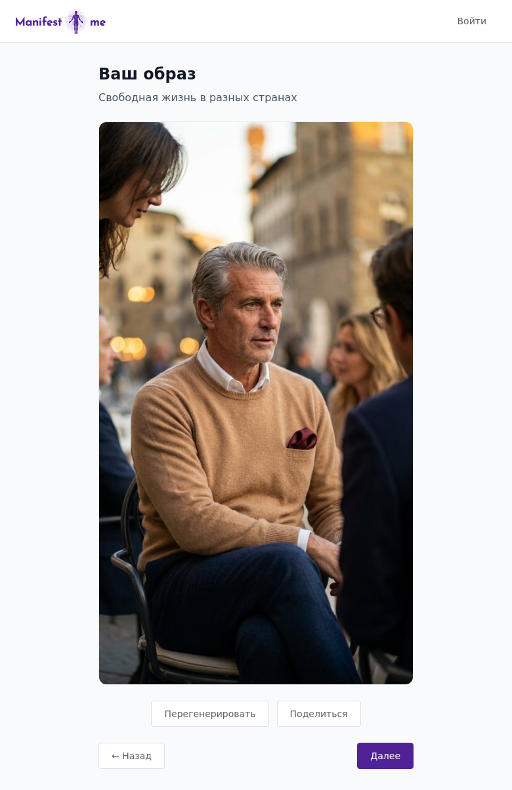
❌ Tuscany / Old Money trap жив. В сфере 9 — мужчина в кашемире на фоне аэропорта (новая локация vs Тосканы 8 мая). В сфере 2 — мужчина в кашемире в премиум-лаунже аэропорта с кожаным портфелем у частного самолёта.
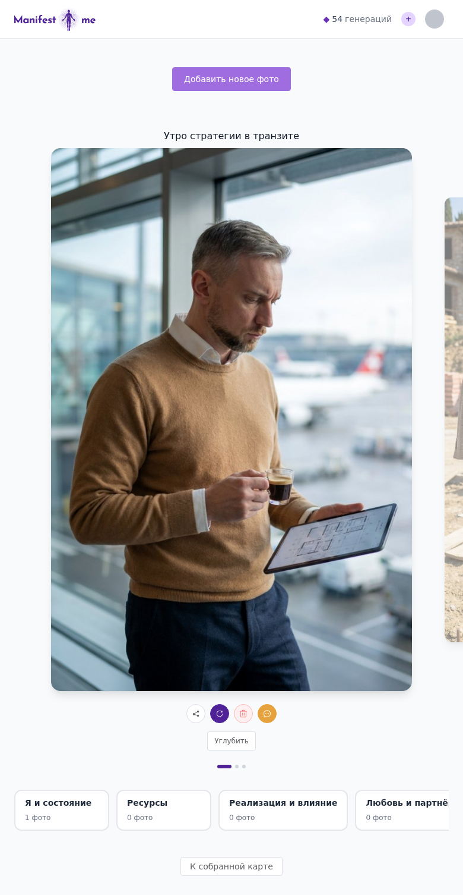
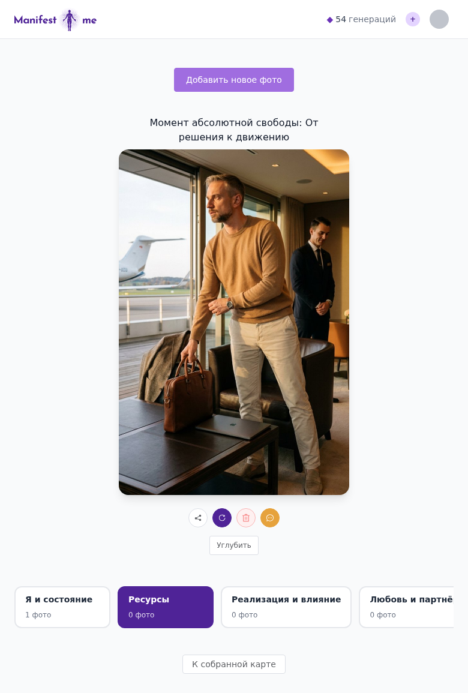
❌ Old Money явно вписан в промт. В pitch’е к сфере 2 буквально: «герой в стиле Old Money закрывает ноутбук в премиум-лаунже аэропорта». Это в текстовом описании, до картинки. То есть промт-движок зашит на Old Money.
❌ «Coffee + laptop» антипаттерн жив. Эспрессо + планшет в сфере 9, ноутбук в сфере 2.
❌ Q4 в сфере 2 — длинный бинарный + переход на «вы». Q1-Q3 на «ты», Q4 на «вы»: «Где именно вы чувствуете эту спокойную уверенность сильнее всего: в тишине уединённого пространства… или в самом потоке движения…?» — рассогласование тональности.
❌ «Премиальный образ жизни и эстетика» в опциях сферы 2 — luxury-фраза не убрана.
❌ Аффирмация manifestation-cringe. «Это ты. В своём деле. Я создаю значимое из любой точки мира. Это уже моя жизнь.»
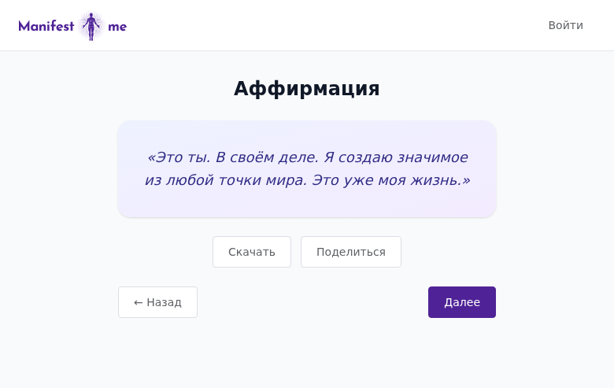
❌ 3 one-liner экрана подряд — only-one-variant → we-can-vision → more-one-scene. По-прежнему.
❌ «Возможные версии твоей жизни» в копирайте онбординга осталось.
❌ MVP Тест видим. В списке тарифов 4 варианта — «Базовый», «Стандарт», «VIP», «MVP Тест». Все по 0₽.
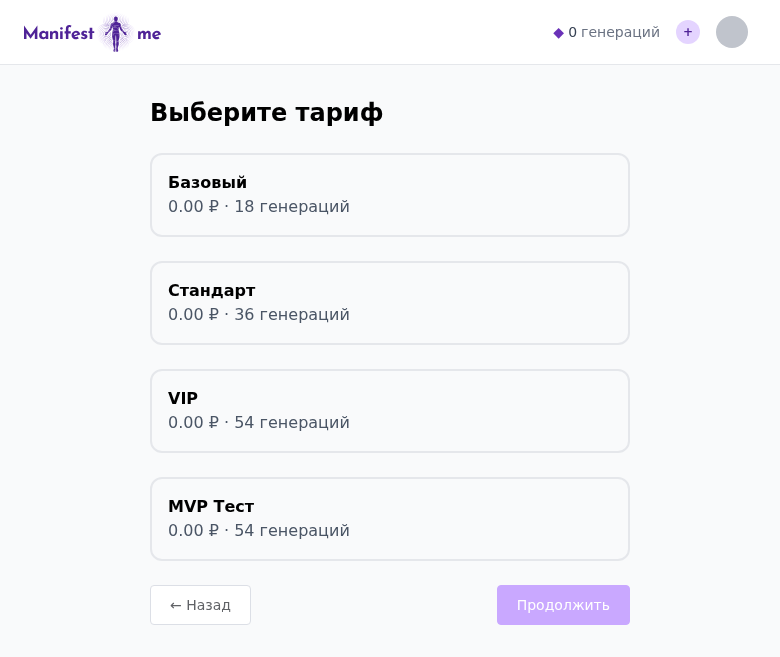
❌ Старая «Карта желаний» flow есть, но за ней сразу dashboard — то есть это переходный экран без смысла.
🔻 На сфере 9 убрали текстовый pitch перед картинкой. Сразу «создаём фото» без 3-кнопочного диалога «Выбрать / Предложить другую / Описать свою». В сфере 2 pitch есть. Рассинхрон между сферами, и сфера 9 теряет UX-находку, которая защищала юзера от плохой генерации.
🔻 Счётчик «X фото» в сферах показывает «Свобода — 3 фото», хотя я сделал одну. Race-condition, либо флаг не сбросился после смены логики «1 фото вместо 3».
🔻 5 шагов опросника вместо 4 в сфере 2. Q5 «Как видеть сцену» добавлен, но без объяснения зачем — юзер только что выбрал 4 ответа на «что важно/как ощущать/где видно/один момент», и теперь ещё один абстрактный. Перегруз.
Главное за 9 мая: Денис залил большой пакет правок — UX-полировки + Q4 наконец-то учитывается в pitch. Это шаг вперёд.
Корень проблемы не починен: Old Money + Tuscany + identity-mismatch — это слой генерации, не слой UI. В мета-промте сцены явно зашиты слова «Old Money», «премиум-лаунж», «частный терминал». Никакой UI-фикс это не уберёт — нужно править ровно тот мета-промт.
Что я нашёл вчера в админке (сессия 8 мая) — корень identity-mismatch в том, что плейсхолдер {micro_adjustment_answers} не вписан в мета-промт сферы 1. Поэтому Q4-ответ юзера никогда не попадает в кадр. Денис это, кажется, начал чинить (Q4-ответ попал в сферу 2). Но в сфере 9 — pitch’а вообще нет, значит логика рассинхронизирована.
После предыдущего обхода Олег попросил отдельный тест — пройти заново со стилем Streetwear (вместо Old Money) и проверить, меняется ли картинка от стиля одежды.
Ответ: ДА, меняется радикально. И не только одежда — целая эстетика.
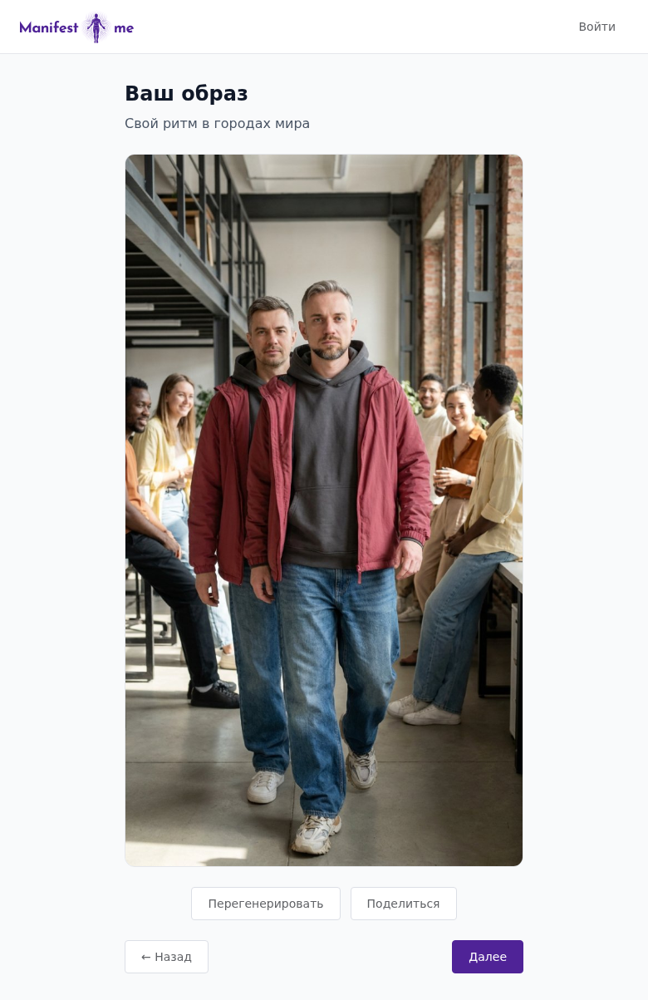
Заголовок: «Свой ритм в городах мира» (vs «Свободная жизнь в разных странах» при Old Money).
Кадр: мужчина в сером худи + красная куртка + синие джинсы + белые кроссовки, индустриальный лофт/коворкинг с молодой разнообразной командой на фоне. Совсем не Тоскана и не кашемир.
🚨 Bug: 2 одинаковых мужчины в кадре — двойник на переднем плане.
9. Свобода и масштаб жизни · «Тишина перед запуском»
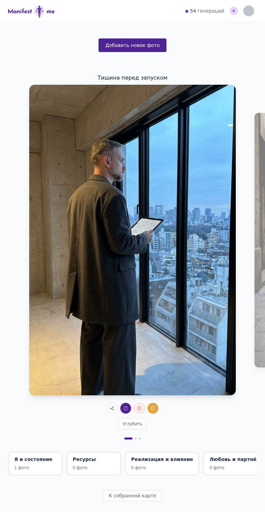
Мужчина в тёмно-зелёном пальто в бруталистическом бетонном лофте Токио с панорамой на небоскрёбы и планшетом с архитектурным эскизом. Old Money здесь дал бы аэропорт + кашемир — Streetwear даёт Токио + пальто.
3. Реализация и влияние · «Момент резонанса: Тишина после влияния»
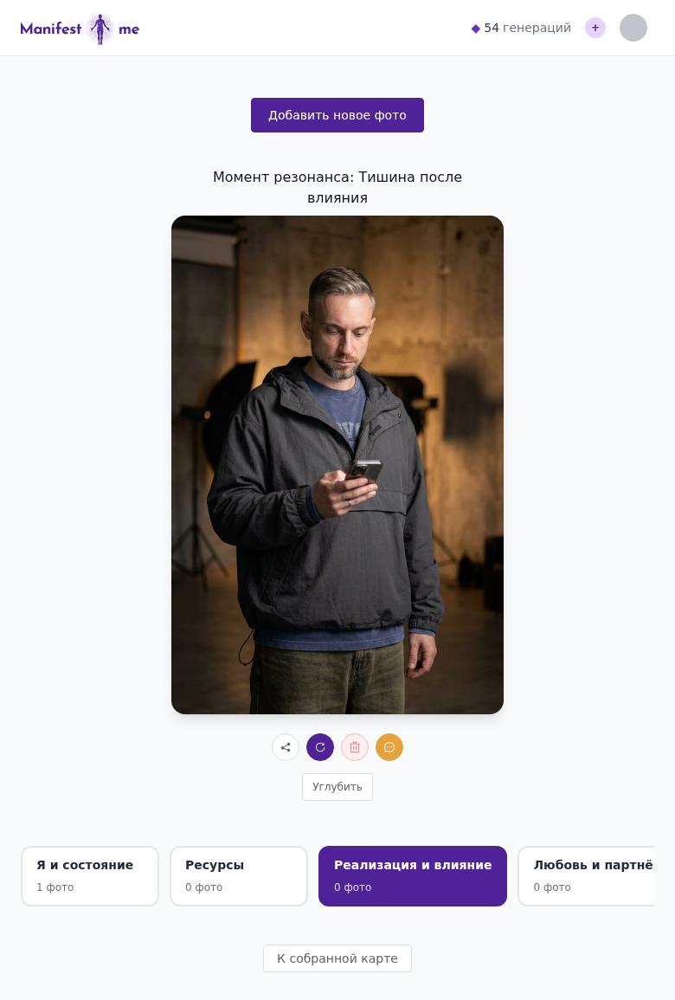
Мужчина в анораке + футболка + джинсы в фотостудии со смартфоном (читает сообщение из Q4-ответа). Pitch — «авторская студия в полумраке, мужчина-новатор» (не Old Money). Q4-ответ «голос или сообщение в DM» попал в pitch и в кадр.
4. Любовь и партнёрство · «Тишина на крыше: одна волна»
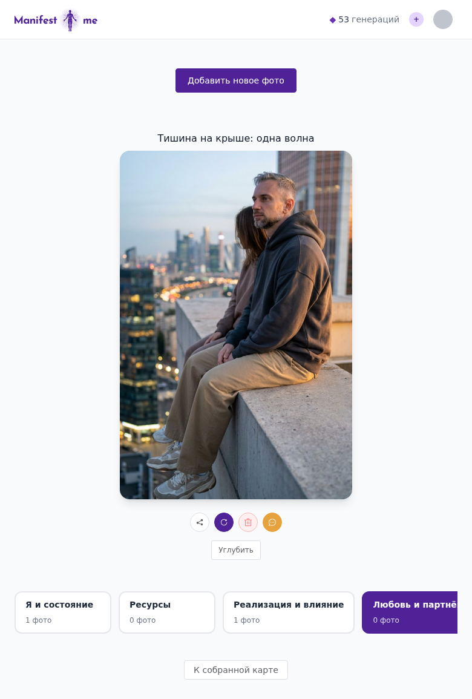
Мужчина в коричневом худи на крыше высотки, партнёр обрезан (правило «без вымышленных людей» соблюдено). Q4-ответ «крыша после долгого дня» попал прямо в кадр. Локация — мегаполис вечером (Москва-Сити или подобный), не Тоскана.
Сфера 9 — Свобода: - Old Money: мужчина в кашемире в премиум-лаунже аэропорта с эспрессо и планшетом → «постоянное движение, лакшери» - Streetwear: мужчина в пальто в бетонном лофте Токио с эскизами → «тихая мысль, азиатская архитектурная сцена»
Сфера 3 — Реализация: - Old Money: «Момент оживления» — кашемир, тёплый свет, кофе - Streetwear: «Момент резонанса» — анорак, фотостудия, смартфон
Сфера 4 — Любовь: - Old Money: «Молчаливый резонанс» — Тоскана, льняная рубашка - Streetwear: «Тишина на крыше» — высотка, худи, мегаполис
Промт сцены НЕ зашит на Old Money. Стиль одежды реально меняет всю эстетику — локацию, материалы, окружение, настроение. Жалоба «вечный Old Money» — это результат выбора стиля Old Money на онборде, не системный баг.
Q4-ответ юзера действительно попадает в кадр (новое поведение vs 8 мая). «Голос в DM» → смартфон в руке, «крыша после долгого дня» → крыша в сумерках, «без согласований» → закрытый ноутбук.
Identity-mismatch продолжается во всех стилях. Это slой ниже стиля — likeness-engine не подмешивается корректно. Корень в том что нашли вчера в админке: плейсхолдер пользовательского образа не вписан в мета-промт.
Стилевая логика хорошая. Old Money = премиум-лаунж + кашемир + Тоскана. Streetwear = лофт + худи + Токио/мегаполис. Это значит ловушка не в самом промте сцены, а в том что в текущей стилевой опции «Old Money» неудачно подобраны якоря (Тоскана, частный терминал — в каждом промте появляются буквально).
Сразу после генерации сцены счётчик в карточке сферы показывает старое значение. Например, в сфере 4 я только что сгенерировал — а счётчик показывает «0 фото». Не обновляется в реальном времени.
После регистрации с MVP Тест выдано 54 кредита. Я сгенерировал 4 сцены (онбор + 3 сферы), счётчик показывает 53. То есть онбор-сцена + 2 сферы из 3 не сняли кредиты — либо счётчик кредитов глючит, либо некоторые сцены идут бесплатно.
Прогон A (Streetwear) сделан частично — 4 сферы из 10. Осталось довести до 10 и сделать прогон B на третьем стиле (например, Casual или Y2K) для полной проверки. Эта страница будет обновляться по мере захода новых данных.
Главные выводы (актуально с этого момента):
Сырые данные с вопросами/ответами и наблюдениями: vault/elyne/research/nextmeee-walkthrough-2026-05-09-data.md (приватный репо Monada).
Скриншоты онбординга v2 (выбор стиля одежды, фото-аплоад):
Шаг 6 — выбор стиля одежды (10 опций под Мужской/Женский):
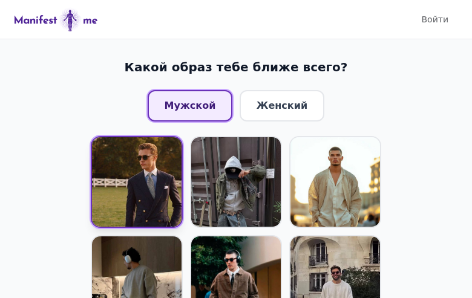
Шаг 8 — фото-аплоад (от 1 до 10 фото, чекбокс согласия на 152-ФЗ):
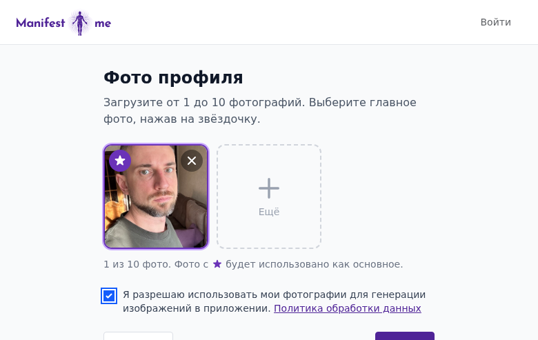